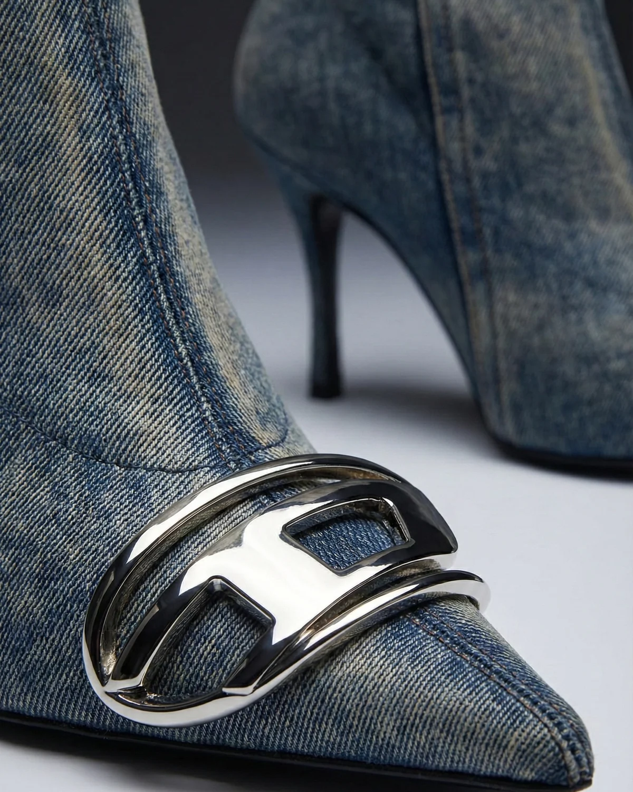

Concept
A macro study of denim and heel hardware shot close enough that the concept becomes texture itself — rivets, eyelets, and stitching turned into an abstract, almost architectural composition.

Process / Notes
The first crops were too literal — pulling back slightly and letting one element fall out of focus gave the frame more of an editorial, intentional feel.
Metal hardware needed distinct micro-scratches and wear to avoid the overly-perfect CGI look AI metal defaults to.
Final Output